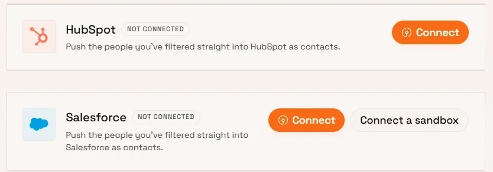

Customer collaboration
Taking Deepgram's Salesforce integration live
I worked the field mapping out with Deepgram's team in their own Slack, and took the integration live on their Contact, Account and Lead objects.

hello I'm
I build products that people log into daily. ship the same week. sync into the CRM. stay honest in prod.
Forward-deployed engineer. At Huntd I owned the customer dashboard end to end, moved its data layer with zero downtime, and built the CRM sync, signal and research systems around it — working directly with the teams at Deepgram, Blitzy, HyperBound and Peec AI.
The part that isn't code
Most of this work started in a customer's Slack: a question, a problem with their data, or something they needed their CRM to do. I scoped it with them, built it, and came back when it was live.
Customer collaboration
I worked the field mapping out with Deepgram's team in their own Slack, and took the integration live on their Contact, Account and Lead objects.

Deepgram · CRM working session Working the sync through on a call with Delano Fernando, who owns Salesforce at Deepgram — Huntd's co-founder and me on the other two tiles.

Deepgram · Lead attribution Checked what switching on lead-source tracking would touch before switching it on. It would have written over history their team depended on, so I put the options to them and shipped the one they picked.

Blitzy · Signup alerts Caught a signup at one of their target accounts and sent it over the same day — before the feature had shipped.

HubSpot · Classification property Specified the property, agreed the setup with the customer, then backfilled it across every record already synced.

HyperBound · Onboarding Taking their team through the Data Explorer on their own data — sources, filters, saved searches and export. Prospect details blurred.

HyperBound · Workflow recommendation Their AEs needed something I had already built for another customer, so I offered to extend it to them rather than build it twice.
Selected work

The product customers log into every day. I owned it end to end — interface, API and schema.
Outcome Put every Huntd customer's lead data behind one dashboard they work in daily — search and filters across millions of rows that stay fast — by owning the interface, the API and the schema end to end
Lead data used to arrive as CSV attachments, with no filtering and no sense of where a record came from. Now customers search their own verified users across millions of rows, break them down by source, save searches and export in a click. Every Huntd customer works in it daily.
Around it, everything daily users asked for next:
The data layer under the dashboard, moved while customers kept using it.
Outcome Moved the product's whole data layer to a new database with zero downtime and no customer signing up again, by copying ~3.8M records across in checked batches and rebuilding what the dashboard reads
Filtering millions of rows by title, seniority, industry and source had hit MongoDB's ceiling. I streamed every collection into Postgres in 5,000-document chunks — smallest first, the 1.27M lead rows last — kept the old shapes so every other service carried on unchanged, and brought password hashes across so nobody had to sign up again.
The move was only half of it. I also reshaped what the dashboard actually reads, so a filter across millions of rows went from a query that crawled to one that returns while you type.

The data was useful, but it lived in the wrong place. I built the bridge into customers' CRMs.
Outcome Got Huntd's data into the tools customers already work in — live in HubSpot, Salesforce and Google Sheets — by building a sync that only writes what changed and never recreates what they deleted
A HubSpot app that syncs contacts and companies, creates its own custom fields and backfills every existing record, with Salesforce mapped onto Contacts and Accounts. Teams that don't want a CRM write get Google Sheets exports grouped by account instead.
Every record carries a content hash: unchanged ones are skipped, failures retry with backoff and surface in the admin panel, and a contact the customer deleted is never recreated.
The lead who wasn't a user last month might have signed up this week — the best moment for sales to call.
Outcome Turned a quarterly re-upload into a daily “just signed up” feed sales teams act on, by re-checking only the leads most likely to have changed inside a fixed daily budget
Re-checking everyone daily costs too much, so the system chooses who to re-check: it learns each org's ideal customer, tiers companies A to D, and spends a daily budget on the leads most likely to have changed.
Customers get a "Just signed up" feed, a watchlist, trends and a Slack digest. Churn runs on the same engine in reverse.

Failures were silent — one vendor produced nothing for weeks while its log said "ok".
Outcome Took silent failures from “we find out from the customer” to a Slack message within minutes, by running 15+ checks every few minutes and having an agent investigate each one
Detector checks the pipeline, the integrations and every customer-facing surface every few minutes, runs a daily known-answer test through each vendor, and posts to Slack only when something newly breaks — with a model-written explanation that's checked so it can't invent details.
Doctor takes the first look at an open case: it reads the codebase, works out what actually caused the failure, and comes back with a fix to approve — requeue the stuck work, run a runbook, or a draft pull request waiting for review.
Ask a question about a company in plain English; get the answer from its own website, with the page it came from.
Outcome Answered plain-English questions about a company from its own website, every answer carrying the quote and the page it came from, by ranking pages first and stopping as soon as the answer was settled
Three depths — Instant reads the landing page, Thinking ranks and reads up to 25 pages, Exhaustive covers up to 500 — and Auto picks one by where the answer is likely to live. Every answer carries a verbatim quote and a confidence, never a guess.
Early stopping keeps it affordable: when one page can settle the question, the first conclusive page ends the run.
The workspace around the agent: upload a CSV, add a column, describe what you want, get sourced answers.
Outcome Built an in-house Clay — upload a list, add a column, every row comes back answered with its source — by splitting it into three services over one queue
Each enrichment column is a prompt with a schema you can preview and edit before it runs. Runs can be paused, resumed or reverted, and every cell has a trace showing exactly what the model read and what it cost.
Plus the spreadsheet basics — edit, dedupe, saved views, full version history — and a public API so another system can run the same enrichment.
An intro finder: shared history goes in, a warm introduction comes out.
Outcome Told a sales team which of their own people can open a door at each target account, and why, by scoring real shared history instead of LinkedIn connections
A LinkedIn connection isn't a relationship. Shared history is — the same team in the same years, the same cohort, the same small company.
Give it a list of target accounts and it reads your team's history against every target's, finds the places where two careers genuinely overlapped, and ranks what it finds — so a rep opens the list and sees who on their own side can make the introduction, and why.
A shared employer of 400,000 people proves nothing; the same team in the same years does. That difference is the whole product.
Walkthrough
Built on my own time
Generative AI
Turns one photo into a digital avatar and dresses it from a text prompt.
Stable Diffusion XL generates the avatar from a single photo, and CLIP retrieval finds outfits that match what you describe.
Computer vision
Spots collisions on live CCTV and alerts responders in real time.
YOLOv8 watches the feed. When it sees a crash, agents estimate speed, read the licence plate, write an incident summary with an LLM, and notify the nearest hospital and police station.
Multi-agent
A team of AI agents behind one chat box.
A supervisor routes each question to a specialist agent instead of asking one model to do everything, with retrieval over your uploaded documents through FAISS.
AI recovery engine
A lost-and-found that helps items find their owners, instead of just logging them.
It asks owners follow-up questions to build a profile of what they lost, matches it against found items using text and image embeddings, and shows a recovery probability that updates over time. Pickups are QR-verified, with fraud checks on every claim.
Community platform
A community platform built for thoughtful conversation over shallow engagement.
Email-verified accounts, user-created Spaces, likes that persist properly, threaded comments and public profiles — a React and TypeScript front end on Node, Express and MongoDB.
About
I'm happiest building things that get used the same week they ship. At Huntd that meant owning a dashboard end to end, then sitting in the customer's Slack while they used it.
Outside work: dance, hackathons, and chess — which only I say I'm good at.
React · TypeScript · Tailwind · Framer Motion
Node · Python · FastAPI · PostgreSQL · Supabase · MongoDB · Kafka
LLM orchestration · RAG · FAISS · CLIP · SDXL · YOLOv8 · Firecrawl
HubSpot OAuth · Salesforce · Sheets API · Webhooks · Docker